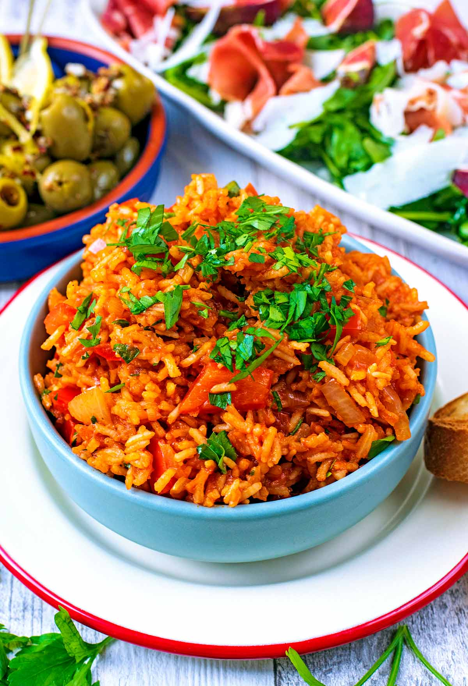

Original Spanish Rice Recipe

Description
A great Spanish rice recipe that is similar to the recipe from the homeland! Add in bacon, onion, pepper, and more for flavor. This can be made as a main dish as well.
Ingredients
- 1 cup chicken broth
- 1 cup tomato sauce
- 6 slices bacon/li>
- 2 onions, diced
- I cup uncooked white rice
- 2 tomatoes diced
- 2 green peppers, diced
- 1/2 teaspoon chili powder
- 1/2 teaspoon salt and ground black pepper
- 1 (10 ounce) can sliced black olives, drained(option)
- 1(10 ounce) can whole kernel corn,drained(optional)
Directions
- Bring chicken broth and tomatoe sauce to a boil in a small saucepan, about 5 minutes. Reduce heat to a medium and maintain a simmer while preparing the remaining ingredients
- Meanwhile, place bacon in a large skillet and cook over medium-high heat, turning occasionally, until evnly browned, about 10 minutes. Transfer bacon to a paper towel-lined plate, reserving bacon grease in the skillet. Chop bacon.
- Cook and stir onion in reserved bacon grease over medium heat until tender, about 5 minutes. Stir in rice; cook and stir until lightly browned, 3-5 minutes. Pour boiling chicken broth and tomato sauce into rice mixture; add diced tomatoes, green peppers, and chopped bacon. Season with chili powder, salt, and pepper.
- Cover and simmer until rice is tender and liquid is absorbed, 30 to 40 minutes. Stir black olives and corn into rice mixture before serving.
Home